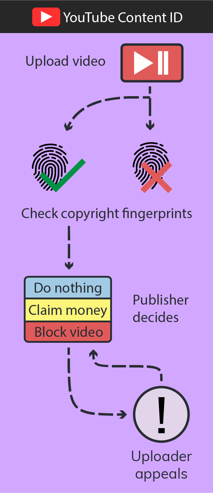

From silently pushed legislation to serious public critiques, the history of technology legislation has seen it all. The EU prepares to take it one step further by wanting platforms to use unproven technology to protect economic interests. Article 13 of the new Copyright Directive is setting up for disappointment.
In the first two parts of this series, we discussed the history of unjust technology legislation. Part I saw loosely defined laws interpreted in the most favourable manner by the more powerful party. Offenders were punished too severely for their illegal or sometimes just unwanted actions. We also found that quickly passing security legislation for fear of terrorism turned into an abuse of the granted powers. All this lead to the unprecedented mass government surveillance revealed to us by Snowden.
Part II discussed the public response. Even before the full scale of government surveillance became known, the public organised itself in protest. When legislators attempted to give similarly disproportionate powers to corporations, public demonstrations caused them to back down and rethink their plans. Again and again, their plans broke on bastions of public resistance.
Unfortunately, we now face a landscape with dysfunctional legislation. Because lawmakers seem to dream up more terrible technology legislation with each turn, the current systems stay in place. To finally refresh the law, the EU wrote the Copyright Directive. It is “aiming at achieving a well-functioning market place for copyright.” It is “expected to have [...] a positive impact on the production and availability of content […] to the ultimate benefit of consumers.”
And the new proposal holds some good parts, that must be said. Until you get to the part about automatic content filtering. What they propose there is pure bullocks dressed up in some legal language. It takes no lessons from earlier, badly implemented technology legislation. It doesn’t take into account how feasible the technological solutions it proposes are. In the final part of this series, we will look at aspects of Article 13 and the lessons not learned from history.
What does the proposed law say?
The EU Copyright Directive The latest working title at the time of writing is The Directive of the European Parliament and of the Council on Copyright in the Digital Single Market (proposed law) aims to unify copyright regulations in the European Union and ensure fair compensation to content creators. Among some fair but overall boring articles on fair renumeration for creators, which nobody will disagree with, it also proposes a measure for internet censorship: Article 13.
Article 13 would require online platforms (e.g. Facebook, YouTube) to make licensing deals with rightsholders. To enforce these licenses, platforms will have to take measures to stop copyright infringement. Such measures, for example “content recognition technologies”, as mentioned in Article 13, would have to be “appropriate and proportionate”. It forces platforms to actively police uploads, effectively making them use an automated upload filter. It does not mention any safeguards or limitations, it just says they must.
Before we dissect the meat of Article 13, which is its mention of content recognition technologies, we will take a look at what it hopes to achieve.
How we protect copyright
Facebook gets 1.3 billion posts, photos and comments per hour. People upload 400 hours of video to YouTube every minute. A part of all that content is copyrighted by commercial parties who allegedly lose money through unlicensed use. On this scale, it’s no wonder that lawmakers face a difficult challenge in copyright enforcement.
The current leading law on copyright on the internet is the U.S. DMCA. It features two key provisions: safe harbour and the take down notice. Take down notices are the tool rightsholders use to file a copyright complaint, which then leads to the content being taken down. Safe harbour means that an online platform isn’t liable for user uploads if they immediately comply with take down notices. The uploader can appeal this decision, but the take down would already be in effect. This encourages strong policing on the platform’s part.
It is better to risk saving a guilty man than to condemn an innocent one.
— Voltaire
This system does not work for any party except the platform. From the uploader’s point-of-view, your content may be blocked even if it is legal. If you appeal it, it will take weeks for it to get unblocked and it takes a lot of effort each time it happens. Even worse, in the DMCA the burden of proof lies on you. You have to proof that you are not infringing on someone’s copyright. You are guilty until proven innocent.
To top that off, rightsholders often abuse these powers. Sony claimed copyright on people performing Bach. Uploading random white noise gets you copyright claims. Nintendo forced content creators to share their income or get hit with take downs until the end of 2018. And then there’s the organisations that take down legitimate content because they don't like it. There’s even businesses that explain how they can help you take negative reviews offline. That’s not following the law, that’s abusing the existing system for censorship.
But it’s not just the little guys taking a beating from evil corporations. Rightsholders find the system problematic as well. They called the current system “an endless game of whack-a-mole.” Pirated content is uploaded, a notice is filed, the content is taken down and it pops up again elsewhere. Of course there is abuse of the system, plenty of it. But at the same time it also fails in protecting legitimate interests. It’s not the legitimate parties’ fault that others do wrong.
All sides dislike the DMCA. All sides have made suggestions to improve it. But with all eyes on the DMCA, we might forget the bigger picture. The ultimate goal is to fight piracy, because it hurts legal sales. But do we have any real proof to back up that statement?
A hidden study appears
In January 2014, the EU ordered a €360.000 study on the loss of sales from piracy. The study was completed in May 2015. Its results were never published, until Julia Reda, a member of the European Parliament, dug it up and shared it with the world. The conclusion of the study: there is no evidence to support the idea that online copyright infringement displaces sales.
The study states that “the results do not show robust statistical evidence of displacement of sales by online copyright infringements.” Instead of piracy being harmful, it found that some industries even profited from it. Games piracy lead to higher game sales and music piracy lead to more people going to concerts. The researchers state that this is in line with similar research on piracy. Conveniently, this study was omitted in the sources for the Copyright Directive.
Our approach to fighting piracy has been wrong all this time. The scientific evidence speaks against it.
This study also found that 39% of all people pirate and 99% of pirates use legal content too. With such numbers and a large overlap between groups, we cannot outright conclude that pirates aren’t willing to pay at all. In the words of Google, as stated in a letter to the Australian government in response to strict anti-piracy laws: “We believe there is significant, credible evidence emerging that online piracy is primarily an availability and pricing problem.” This statement is backed up by EU research concluding that Spotify caused a decrease in music piracy during its meteoric rise.
But availability is becoming a problem again. At first, Netflix and Spotify opened the door for consumers to subscribe to a service. Now, everyone and their uncle is developing their own platform with exclusive content. This is more expensive for consumers, as much content ends up spread out over different platforms. There’s still Netflix, but there’s also Amazon Prime Video, HBO Go, CBS All Access, FX Now, Showtime Anytime and many more. Each of these services comes with a monthly fee. It’s no wonder that they worry about piracy.
Our approach to fighting piracy has been wrong all this time. The scientific evidence speaks against it. It may be difficult to change a narrative that started before the internet was a thing, but it needs to happen. We need to better understand the causes of piracy and how we minimise its impact. We don’t need an Article 13 that builds on examples of censorship and abuse.
Immature copyright technology
The Copyright Directive is harmful in its implementation. There’s no other way to say it. It proposes to combat piracy with “the use of effective content recognition technologies.” It assumes that such tools exist and are effective. And while such technologies do exist, they are not fit for purpose by any means. In fact, they are woefully unequipped to account for the nuances and context that come with copyright.

To see how inaccurate the current technological solutions are we can look at the largest example out there: YouTube’s Content ID. The system - a spawn of the U.S. DMCA - allows rightsholders to upload so-called digital fingerprints of their work. Content ID uses these fingerprints to detect when that material is used in new uploads. The system flags these videos and rightsholders can take one of several actions: let it slide, funnel the advertising revenue into their own pockets or block it.
The problem is that it’s not always clear when something infringes on copyright. Most countries have provisions that allows (parts of) a work to be used without requiring a license from the copyright holder. This allows the creation of reviews, educational content, the use of quotes and much more. This is called fair use. The problem is that scanning an upload and finding partial use of a work does not say anything of whether it’s fair use. This requires human interpretation. It’s not even uncommon for people to disagree and take legal action. These are the nuances computer systems cannot deal with.
It’s difficult to make a system like this work effectively, yet that is what lawmakers expect. They could have gone for removing content that has a very high match on both video and audio of a single copyrighted work and is clearly illegal. Instead, they chose the fantasy that technology will solve all our problems. A better way would be to let technology pick out the easy cases and leave the nuances to us humans.
The day that automated “content recognition technologies” are legally mandated will come. They are already widely used and legal standards are not a bad idea. But the assumption that a vaguely defined technology will solve the issue is ignorant. Our lawmakers need to actually understand technology to effectively apply it. That includes learning what it cannot do.
Who wants this?
The evidence speaks against the approach to copyright protection and the proposed technology. But if the public wants it, it's just democracy doing what it's supposed to, right? It’s time to look at the public consultations In case you’re unfamiliar with the process: public consultation is the phase in which a draft law is published and everybody willing can give their input. and see if that argument holds any merit.
The European Union holds the same position as a minority of rightsholders who want strong regulation in fear of economic loss.
Civilian responses to the proposed law worried that the increased responsibility of online platforms would lead to censorship. The current approach against copyright infringement was too harsh and the process is unfair. These concerns are not new, we also see them uttered about the DMCA.
80% of respondents support the idea of a fairer system. The offending party should be heard (a so-called counter-notice) before content is taken down. The current practice of taking content down before giving the uploader a chance to defend itself would only need to apply to obviously illegal content. Once again, the majority states for a more moderate approach to a flaw in current legislation.
The most surprising conclusion, however, is that the majority of rightsholders and representative organisations are in line with consumers. My initial suspicion was that Article 13 was the stance of the majority of rightsholders, but that turned out to be wrong. They are against the type of regulation Article 13 presents. They fear that the wrong party becomes liable for illegal activity and abuse. And that’s the reasonable stance to take.
It's only when we find rightsholders with tougher opinions that we find statements like "Online platforms should take all appropriate and reasonable measures to prevent repeating infringements of intellectual property rights online." (AIM consultation response) It’s almost like such input is the only basis for Article 13. The conclusion I draw here is that the European Union holds the same position as a minority of rightsholders who want strong regulation in fear of economic loss. That’s far removed from the inclusive democratic idea and closer to a capitalistic oligarchy.
Stop Article 13
The majority of people want to do good in this world. They want fairer practices for copyright protection. They want that those who do wrong are separated from those who do right. But those nuances aren't found in Article 13. It’s a vaguely worded technology law that leads to terrible implementations. That much we can learn from history.
Article 13 needs to be stopped. Activist organisations and online platforms have already begun to rally their audiences. If you agree with me, you can join over 4 million people and sign the petition to Save the Internet.
Final thoughts on the series
Every time we discuss copyright law, we miss the voice of history. The voice telling us that this is the umpteenth attempt in a decade and that this time won’t be any different. Every time, lawmakers go against both evidence and public opinion. The debate never moves forward.
I hope that this series helped put this history in your conscience. Learning that badly worded technology law leads to terrible execution. That government-mandated monopolies are a bad idea. The problems at hand are complex and hard to solve. There is no technological quick-fix.
The history of these laws certainly has helped me put it all into a larger perspective. That perspective worries me. The larger pattern shows that economic interests are the number one priority for lawmakers. There have been just laws as well in the time period covered, but every time lawmakers lose all goodwill by proposing an Article 13. Or an ACTA. Or anything else in this series.
The laws discussed often intersect with different issues, such as terrorism, organised crime and child pornography. These issues are far too complex for a summary like this one, especially if you have to place them in a context of laws regarding economic and state interests. All these issues warrant attention, but not without careful consideration for civil rights. That’s the perspective in these articles.
Now it's time to look to the future. We've seen that people can band together against unjust laws. Let's do that again and again, until those who write them finally listen.
Fingerprint icon by Freepic


Enabling comments requires your consent for Disqus to place cookies. You can review their privacy policy here.